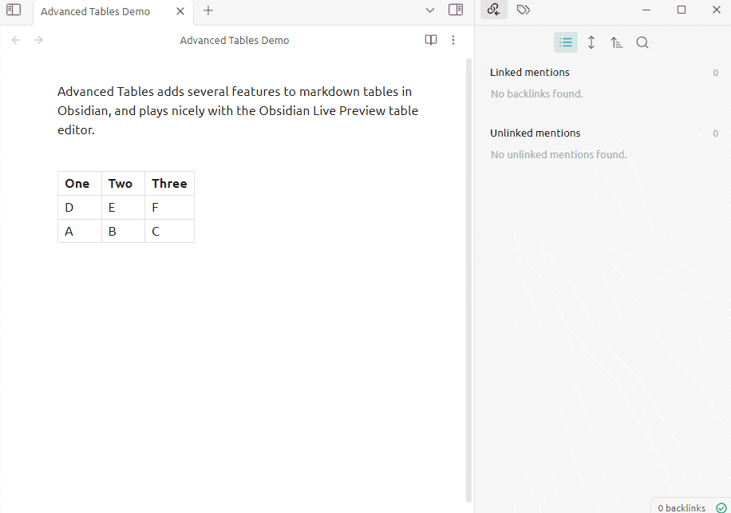
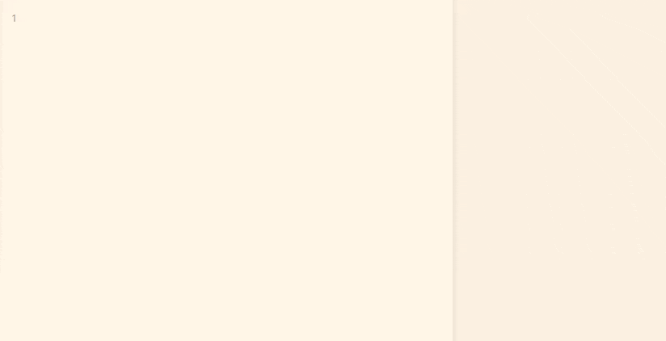
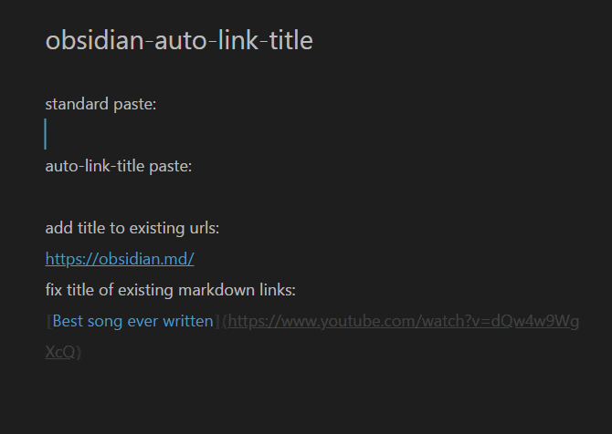
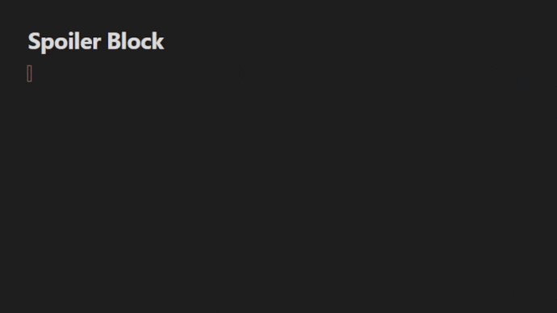
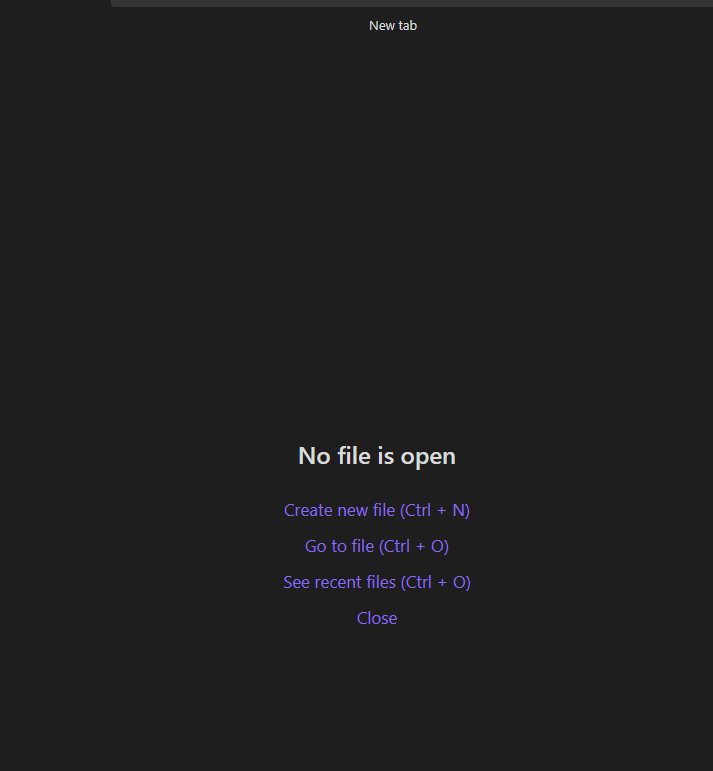
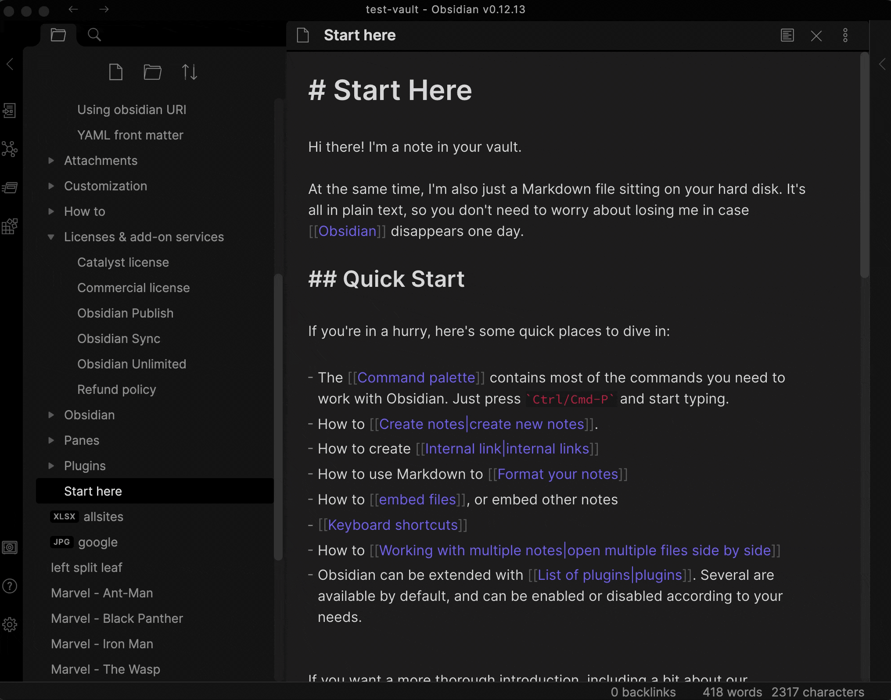
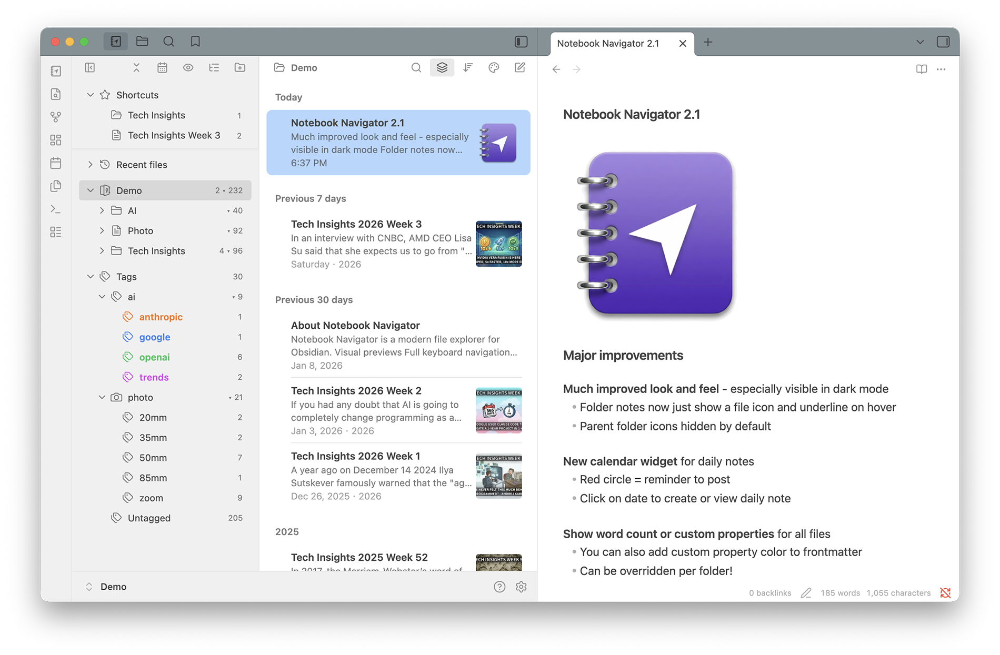
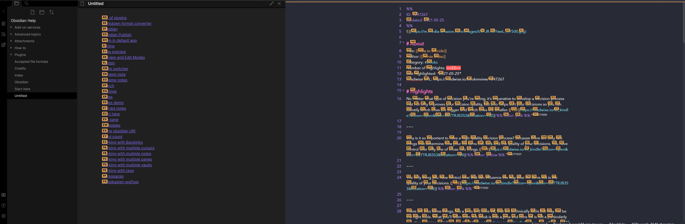

이전 글 Obsidian : Sharpen your thinking에서는 Obsidian이 어떤 도구인지 간단히 정리했다.
이번에는 실제로 사용하고 있는 커뮤니티 플러그인들을 소개하려고 한다.
Obsidian은 기본 기능만으로도 충분히 사용할 수 있지만, 플러그인을 통해 활용성을 크게 확장할 수 있다.
현재 vault에 설치된 플러그인은 30여 개 정도이고, 그중 꾸준히 사용하고 있는 것들을 카테고리별로 나누어 소개한다.
데이터 & 쿼리
Dataview
- Obsidian의 가장 강력한 플러그인 중 하나다.
- 노트의 frontmatter나 인라인 필드를 기반으로 SQL과 유사한 쿼리를 작성해 동적 테이블이나 리스트를 만들 수 있다.
- 예를 들어, 특정 태그가 붙은 노트만 모아서 테이블로 보여주거나, 최근 수정된 파일 목록을 자동으로 생성하는 식이다.
- 내 vault의 홈페이지도 Dataview 쿼리로 구성되어 있다.
Obsidian Sortable
테이블의 컬럼 헤더를 클릭하면 오름차순/내림차순으로 정렬해준다. Dataview로 생성한 테이블에도 적용되기 때문에 함께 쓰면 유용하다.
글쓰기 & 편집 보조
Advanced Tables
마크다운 테이블을 직접 타이핑하는 것은 상당히 번거로운 일이다. Advanced Tables는 탭 키로 셀 간 이동, 자동 정렬, 행/열 추가 등을 지원해서 스프레드시트처럼 편하게 테이블을 편집할 수 있게 해준다.

Various Complements
노트를 작성하면서 다른 노트 제목, properties 값, 현재 파일 내 단어 등을 자동완성으로 제안해준다. 타이핑 양이 줄어들고 오타도 방지할 수 있다.

Linter
저장 시 마크다운 포맷을 자동으로 정리해준다. 빈 줄 정리, 헤더 스타일 통일, trailing space 제거 등 세세한 규칙을 설정할 수 있어서 일관된 문서 형식을 유지하는 데 도움이 된다.
Regex Replace
파일 내에서 정규식을 사용해 텍스트를 일괄 치환할 수 있다. 대량의 노트에서 특정 패턴을 수정해야 할 때 유용하다.
Auto Link Title
URL을 붙여넣으면 자동으로 해당 페이지의 제목을 가져와서 마크다운 링크 형태로 만들어준다. 일일이 링크 제목을 입력하지 않아도 된다.

Excalidraw
노트 안에서 바로 다이어그램과 스케치를 작성할 수 있는 플러그인이다. 손으로 그린 듯한 스타일의 도형, 화살표, 텍스트를 자유롭게 배치할 수 있고, 작성한 Excalidraw 파일을 다른 노트에 임베드할 수도 있다. 아이디어를 시각적으로 정리할 때 유용하다.
Spoiler Block
접기/펼치기가 가능한 스포일러 블록을 만들 수 있다. 긴 내용을 숨겨두고 필요할 때만 펼쳐볼 수 있어서 유용하다.

자동화 & 워크플로우
Templater
Obsidian의 기본 템플릿 기능을 대폭 확장한 플러그인이다. JavaScript 기반의 변수와 함수를 템플릿 안에서 사용할 수 있어서, 파일 제목, 생성 날짜, 커서 위치 등을 자동으로 삽입하는 것은 물론이고 외부 명령어 실행이나 조건 분기 등 복잡한 자동화도 가능하다. 새 노트를 만들 때는 거의 항상 Templater 템플릿을 통해 만든다.
QuickAdd
노트 생성, 캡처, 매크로를 하나의 커맨드로 실행할 수 있게 해준다. 예를 들어 특정 폴더에 미리 정해진 템플릿으로 노트를 만드는 동작을 한 번의 단축키로 수행할 수 있다. Templater와 함께 쓰면 워크플로우 자동화의 핵심 조합이 된다.
Update Time on Edit
노트를 수정하면 frontmatter의 updated 필드를 자동으로 갱신해준다. 수동으로 수정 시간을 관리할 필요가 없어진다.
Merge Notes
여러 노트를 하나로 병합할 수 있다. 잘게 쪼개진 노트를 정리하거나, 관련 내용을 하나로 합칠 때 사용한다. 주로 데일리 노트를 월별 노트로 합쳐서 사용한다.
탐색 & UI
Omnisearch
Obsidian의 기본 검색보다 훨씬 빠르고 정확한 전체 텍스트 검색을 제공한다. 인덱싱 기반이라 vault가 커져도 검색 속도가 빠르고, 퍼지 매칭도 지원한다.

Switcher++
기본 파일 전환기를 대체하는 플러그인이다. 파일명뿐 아니라 헤더, 심볼(함수, 블록) 단위로도 검색하고 이동할 수 있어서 긴 노트 안에서의 탐색이 훨씬 수월해진다.

Homepage
Obsidian을 열 때 자동으로 지정된 노트를 띄워준다. 나는 Dataview 쿼리가 포함된 홈 노트를 시작 페이지로 설정해서 원하는 뷰를 구성해 한번에 확인한다.
Notebook Navigator
파일 탐색기를 스타일의 UI로 변경해준다. 좌측에 폴더 트리, 우측에 파일 목록을 보여주는 방식으로 탐색이 직관적이다.
- Mastering Notebook Navigator for Obsidian - YouTube
- 설명보다 영상이 더 이해가 쉽다.

- 설명보다 영상이 더 이해가 쉽다.
Remember Cursor Position
노트를 닫았다가 다시 열면 마지막 커서 위치를 그대로 복원해준다. 작은 기능이지만 긴 노트를 자주 왔다 갔다 할 때 매우 편리하다.
Jump to Link
화면에 보이는 링크나 헤더에 단축키로 빠르게 이동할 수 있다. Vim의 EasyMotion과 유사한 방식으로 동작한다.

File Explorer Note Count
파일 탐색기의 각 폴더 옆에 노트 개수를 표시해준다. 어떤 폴더에 노트가 얼마나 쌓여 있는지 바로 파악할 수 있다.
Settings Search
Obsidian의 설정 화면에서 키워드로 검색할 수 있게 해준다. 플러그인이 많아지면 설정 항목도 많아지는데, 원하는 설정을 빠르게 찾을 수 있다.
Slash Commander
슬래시(/) 커맨드 메뉴를 커스터마이징할 수 있다. 자주 쓰는 명령어를 등록하거나 순서를 변경하고, 아이콘도 지정할 수 있다.
테마 & 외관
Minimal Theme Settings
Minimal 테마 전용 설정 플러그인이다. 카드 레이아웃, 이미지 그리드, 체크박스 스타일 등 Minimal 테마에서 제공하는 다양한 옵션을 UI로 조정할 수 있다.
Style Settings
테마나 CSS 스니펫에서 정의한 변수를 설정 화면에서 직접 수정할 수 있게 해준다. CSS를 직접 건드리지 않아도 색상, 폰트 크기 등을 쉽게 변경할 수 있다.
Typewriter Scroll
활성 줄이 항상 에디터 화면 중앙에 위치하도록 스크롤을 조정해준다. 글을 쓸 때 시선이 화면 아래로 내려가지 않아서 집중하기 좋다.
Vim 지원
Obsidian Vimrc Support
Obsidian의 Vim 모드에서 .obsidian.vimrc 파일을 통해 키 매핑을 설정할 수 있게 해준다. Vim 사용자라면 익숙한 설정 방식 그대로 Obsidian에서도 커스텀 키맵을 적용할 수 있다.
외부 연동
Obsidian Git
vault 전체를 Git으로 관리할 수 있게 해주는 플러그인이다. commit, push, pull 을 자동으로 설정할 수 있어서 별도의 조작 없이도 변경 사항이 원격 저장소에 백업된다. 버전 관리와 기기 간 동기화를 동시에 해결할 수 있는 실용적인 방법이다.
Readwise Official
Readwise에서 수집한 하이라이트를 Obsidian으로 자동 동기화해준다. Kindle, 웹 아티클, 팟캐스트 등 다양한 소스에서 모은 하이라이트가 노트로 변환되어 vault에 쌓인다.
Imgur Plugin
노트에 이미지를 붙여넣으면 Imgur에 자동으로 업로드하고 링크를 삽입해준다. vault에 이미지 파일이 쌓이는 것을 방지할 수 있다.
Advanced URI
obsidian://advanced-uri scheme을 통해 외부에서 특정 노트를 열거나, 내용을 추가하거나, 커맨드를 실행할 수 있다. 다른 앱이나 자동화 도구에서 Obsidian을 제어할 때 유용하다.
Copilot
Obsidian 안에서 AI 어시스턴트를 사용할 수 있다. Claude, GPT 등 다양한 모델을 연동하여 노트 기반 질의응답, 요약, 텍스트 생성 등을 수행할 수 있다. 노트 내용을 컨텍스트로 활용할 수 있다는 점이 외부 AI 도구와의 차이다.
Smart Connections
AI를 활용해 현재 노트와 의미적으로 연관된 다른 노트들을 자동으로 찾아준다. 단순한 키워드 매칭이 아니라 내용의 유사도를 기반으로 연결을 제안하기 때문에, 잊고 있었던 관련 노트를 다시 발견하거나 새로운 연결을 만드는 데 도움이 된다.
ETC
Meld Encrypt
노트 내 선택한 텍스트를 비밀번호로 암호화할 수 있다. 암호화된 텍스트는 .mdenc 형태로 저장되며, 비밀번호를 입력해야만 복호화된다. 민감한 정보를 vault 안에 안전하게 보관할 수 있다.
Tag Wrangler
태그를 우클릭해서 이름 변경, 병합, 삭제 등을 일괄 처리할 수 있다. 태그 구조를 리팩토링하거나 정리할 때 하나하나 수동으로 바꿀 필요가 없어진다.
마무리
Obsidian을 쓰면서 필요할 때마다 하나씩 추가하다 보니 자연스럽게 이 구성이 되었다. 원래는 좀 더 많았다가 사용하지 않는 플러그인도 많고 무거워지는 느낌이 들어서 어느 정도 삭제했다.
플러그인을 많이 설치하는 것보다 중요한 건, 실제로 계속 사용하는 구성을 만드는 것이다.
처음부터 완성된 세팅을 만들기보다는, 사용하면서 자신의 워크플로우에 맞는 것들을 천천히 찾아가는 것이 Obsidian을 제대로 활용하는 방법이라고 생각한다.
플러그인 추천 링크